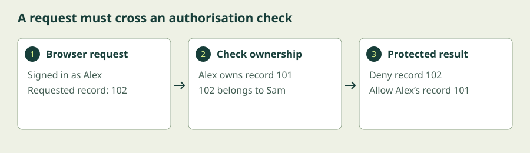

Security Design
A secure system helps people do the right thing. Design a centre portal that limits damage, checks permission, and remains simple enough to use.
Begin the lesson ↓By the end, you can…
- Apply least privilege and check authorisation for every protected action.
- Identify weak links, trust boundaries, and layered controls.
- Explain how simplicity, usability, and secure defaults affect design.
- Test and repair an access-control flaw in a simulated portal.
Build fewer opportunities for harm.
1. Design around what could go wrong
Security design begins before choosing products. For the centre portal, draw where information goes: a learner’s browser sends a request to the portal, which reads the learner database. An email service sends reminders. Each point where control or trust changes is a trust boundary. Treat a browser request as untrusted even if the interface looks legitimate.
A simple threat model asks four questions: what are we building, what could go wrong, what will we do about it, and how will we check? A learner might request somebody else’s record. A compromised reminder service might receive too much information. A failed database might stop registrations. The goals from Module 1 tell us why these failures matter.
2. Give each role only what it needs
Least privilege means giving people and software the smallest set of permissions needed for their work, for as long as needed. Learners need their own records; volunteers need class attendance; finance staff need payment records. A reminder service needs an email address and class time, not payment history. A separate admin account can make unusual elevated activity easier to review.
Complete mediation means checking permission each time a protected resource is accessed. Hiding an admin button is insufficient: an attacker can send the request another way. The server must check the authenticated user’s role and their relationship to the requested record. A guessed record number must never become permission.
In this module’s simulator, the first rule deliberately checks only whether a person is logged in. Changing the requested record reveals another learner’s details. The repair checks ownership too. In a real system this enforcement belongs on the server; browser-only checks are editable by the user.
3. Find the weakest link and add layers
A strong front door helps little if an unlocked window bypasses it. Likewise, excellent encryption cannot compensate for an account that is allowed to download every record. Review password recovery, support access, backup storage, and third-party integrations as well as the main login.
Defence in depth uses controls with different purposes: MFA at login, authorisation at the record, segmentation around the database, export alerts, and isolated backups. Layers reduce the chance that one failure becomes a disaster. Five controls depending on the same compromised administrator may share a common failure point.
Secure defaults start with minimal access. Fail securely means an access-check failure denies the protected request rather than letting everyone in. Plan a controlled recovery process so a fail-secure system does not leave legitimate users stranded. Separation of duties can require one person to request a large refund and another to approve it.
4. Simplicity and usability are security properties
Every feature, integration, and configuration adds ways to make mistakes. Reducing the attack surface means removing unnecessary exposed functions and services. Use maintained components, parameterised database queries, sensible input limits, and carefully scoped permissions. Do not invent an encryption algorithm to make the system appear special.
A difficult control may be bypassed. If volunteers cannot recover accounts safely, they may share one login. A usable design gives each person an account, offers clear recovery instructions, and uses understandable error messages. Security should fit the work: reminders can contain minimal information and link to a protected page.
There are trade-offs. Short sessions limit the window for a stolen device but interrupt teaching. A reasonable design can use longer low-risk sessions and require fresh authentication for exporting records. Describe the threat and the cost before selecting a control, then test with representative users.
Parisa Tabriz’s historical talk below illustrates browser security design. Focus on the design ideas, rather than treating a 2013 browser interface as current guidance. In her later Google essay, she emphasises addressing underlying causes and sustained improvement.
A LinkedIn engineering case study by Nathan Walsh, with acknowledged contributions from Mukul Khullar and colleagues, shows that restricting characters in an input may still leave an unintended capability. Ask what an allowed action can actually do, not just whether input looks safe.
Another way into the ideas
Choose the written lesson or combine these visual explanations with the guided exercise. The videos cover selected concepts; use the short written explanations to fill the remaining objectives.
Chrome Security Secret Sauce
Parisa Tabriz · Strange Loop, 2013
An optional practitioner lecture on security, simplicity, and browser protection. The guided portal exercise below teaches this module’s access-control principles directly.
Watch on YouTube if playback is blocked. Use YouTube’s captions where available; the written lesson provides a complete learning path.
Find and repair a permission flaw
This is an intentionally simplified, fictional portal. You have permission to test only this simulator. It uses no real accounts or records.
Allow 20–30 minutes. Exercises reset when you reload or leave. They do not save progress or submit your entries.
- Leave the signed-in learner as Alex (record 101) and the rule as Login only. Request record 101; Alex’s fictional record appears.
- Change Requested record to 102 and click Request record. You can see Sam’s fictional record. Explain why being logged in is insufficient.
- Change the rule to Login + ownership. Request 102 again: access should be denied.
- Request 101 under the repaired rule. Alex should retain legitimate access. A secure fix must prevent abuse while preserving intended behaviour.

Signed-in learner: Alex · record 101
Show the solution and troubleshooting
The vulnerable rule allows record 102 because it only checks login. The repaired rule allows 101 and denies 102. This is a simplified example of broken object-level authorisation: knowing an identifier must not grant access to its object.
If you still see Sam after selecting the repaired rule, click Request record again; changing a menu does not issue a new request. Test all four combinations. Real-world fixes require server-side checks on every access, plus tests for other roles and actions. Our browser simulator demonstrates the decision, not a deployable security boundary.
Extra layers could include logs for denied requests and limits on bulk exports. They support the ownership check; they do not replace it.
Check your understanding
Would hiding the record selector repair the vulnerability?
Compare your answer
No. A client can alter or recreate a request. The system serving the record must enforce ownership on each request.
What to take with you
- Model assets, information flows, and trust boundaries before selecting controls.
- Apply least privilege and enforce authorisation on every protected request.
- Review bypass routes and common dependencies across defensive layers.
- Make secure defaults and recovery simple enough for people to use.
Keep exploring
Independent educational material. External videos and resources belong to their creators; inclusion does not imply endorsement. References checked 6 October 2026.